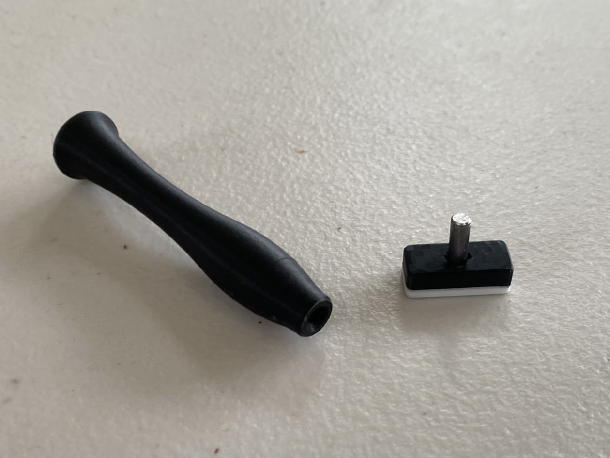

A stamp with interchangeable heads for stamping initials into clay.
1 / 3
The stamp heads and handle were 3D printed. A steel rod allowed the stamp heads to be inserted into the handle, where a magnet held them securely in place.

2 / 3
I also 3D printed a case to keep them all together.
3 / 3
I also 3D printed a case to keep them all together.